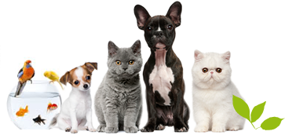
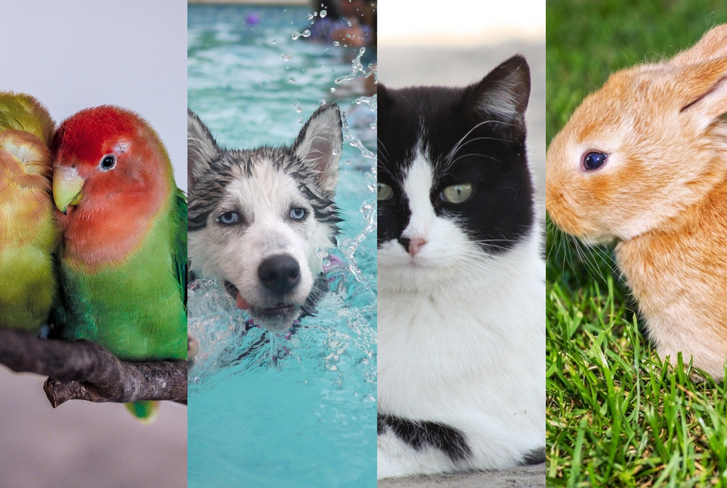

 Las mascotas son animales domésticos, también son llamados animales de compañía y como su nombre lo indica son conservados por sus dueños para formar parte de la familia, disminuir la soledad y traer la alegría a sus hogares. Las mascotas alegran nuestros días, nos ofrecen compañía y algunas de ellas incluso pueden llegar a ser aliadas para nosotros en la ejecución de tareas diarias si se les da un entrenamiento correcto. Recientes estudios han demostrado que tener una mascota en casa permite contrarrestar el stress, disminuye nuestra presión arterial cada vez que las acariciamos, incrementar el autoestima al ponerte en el papel de su “líder” y son una excelente fuente de lecciones de responsabilidad y sensibilidad a los niños, entre otros muchos beneficios. Algunas de las mascotas preferidas para tener en casa son en primer lugar los perros, luego vienen los gatos, los peces, los canarios o periquitos, los conejos, los hamsters y hasta los hurones y erizos pigmeos, esto por ser animales que requieren cuidados básicos y ofrecen compañía, disminuyendo el mal humor y en determinados casos incentivando a sus dueños a realizar actividades físicas al jugar y salir de paseo con ellos. Las mascotas pueden resultar grandes aliadas en procesos de recuperación de cirugías y enfermedades y servir como guías para favorecer la mejor orientación de personas invidentes, minusválidas o sordas. A las mascotas hay que tratarlas con amor y para garantizar su calidad de vida, no solo basta con ofrecerles agua y comida, también deben contar con los artículos necesarios para su salud, aseo, descanso y paseos.
Las familias actuales tienen diferentes composiciones. Hoy en día existen hogares monoparentales, personas que viven solas, familias numerosas, etc...En cada una de ellas hay diferentes relaciones que unen a sus habitantes y en muchas de ellas existen más seres vivos que completan el núcleo familiar. Se trata de las mascotas. En muchos hogares, las mascotas son una parte fundamental de la familia. Animales como los perros o los gatos, conviven con niños y adultos con los que comparten todas sus vivencias. Asimismo, otros animales domésticos como los peces o los hamsters se cuelan en muchas casas para hacer las delicias de sus dueños.
A continuación se citan los beneficios concretos para el bienestar mental originados por tener mascota y cuidar de ella:
- Evitan el sentimiento de soledad: Contar con una mascota en el hogar ayuda a que la persona se sienta más segura de sí misma y más protegida. También puede ayudar a evitar estados como la depresión por sentimiento de soledad, ya que su compañía estimula el contacto físico y la comunicación. Puede que no hablen, o que no nos sigan la conversación, pero uno sabe, con total certeza, que no está solo en casa y que tiene compañía.
- Alivian la depresión: Las personas deprimidas no sienten el deseo de relacionarse. Cuando una persona mantiene un vínculo con una mascota, tiene un motivo para levantarse de la cama. Quizá no tenga ganas de hacer nada, pero sabe que debe darle de comer y en el caso de los perros, por ejemplo, sacarle a la calle. Es frecuente que la persona deprimida no se desahogue con nadie, pero quizá sí se siente capaz de hablarle a su mascota.
- Aumentan el sentimiento de felicidad: Los dueños de mascotas, tras compartir un rato de juegos, experimentan un aumento de oxitocina, se estimula la producción de serotonina y la dopamina, al mismo tiempo que el cortisol se disminuye, todas estas hormonas ayudan a disminuir los niveles de estrés y son un buen antídoto contra la depresión.
- Reducen el estrés: El equipo de la psiquiatra Sandra Baker de la Universidad Commonwealth de Virginia (EEUU) midió las ondas cerebrales de distintos dueños de perros antes y después de pasar un rato con ellos. Estos estudios han revelado que tener una mascota y acariciarla frecuentemente, ayuda a reducir los sentimientos de estrés, ansiedad y depresión. Por lo que se aconseja acariciar, jugar, pasear e incluso hablar con las mascotas para despejar la mente y sentir bienestar.
- Aumentan el sentido de la responsabilidad: Nos hacen responsables en su cuidado, y nos enseñan a plantearnos prioridades. Además de ser un compañero de juegos para los niños y niñas, crecer con una mascota es una oportunidad para enseñarles a ser responsables y a respetar a los animales. Los perros, por ejemplo se convierten en unos maestros excelentes, fuente inagotable de estímulos que despiertan los sentidos del niño.
- Mejoran la vida social: Con frecuencia, salir a pasear a la mascota es la excusa para conocer gente: en los parques se forman corrillos de dueños de perros que coinciden allí, hay desconocidos que se acercan a acariciar a un cachorro o surgen conversaciones sobre anécdotas o el cuidado de sus mascotas.
- Refuerzan la autoestima: Los dueños de mascotas tienen más probabilidad de tener una mayor autoestima, según concluyeron los científicos de las universidades de Miami y Saint Louis. Se ha observado también que niños y niñas con alguna dificultad de que leen en voz alta delante de su mascota refuerzan su seguridad y confianza en sí mismos, ya que las mascotas no se van a reír de cómo lo hacen o si se equivocan.
perros gatos Hámsters pájaros Las mascotas más comunes son los perros. Estos animales se alzan como el animal doméstico por excelencia. Su instinto de protección y la compañía que ofrecen hacen que los perros se conviertan en un miembro más de muchas familias. Los perros son amigos incondicionales de sus amos y, por eso, muchas personas no pueden vivir sin ellos. Los gatos son los segundos en la lista de mascotas. Estos animales domésticos tienen grandes adeptos por la compañía infinita que ofrecen. No obstante, son muchas las personas reacias a convivir con un gato. Los gatos no siempre han sido animales de compañía, ya que sus orígenes son claramente salvajes. Estos roedores son uno de los principales animales domésticos en las casas con niños. Los hámsters son, en muchas ocasiones, la primera mascota para algunos pequeños. No requiere demasiados cuidados especiales pero sí hay que garantizarle unas buenas condiciones higiénicas y de temperatura. El hámster debe contar con una jaula homologada en la que comerá, dormirá y jugará. Existen numerosos modelos en el mercado, con los que el animal se sentirá de lo más a gusto. Pájaros como los loros o los periquitos son otras de las mascotas más comunes. En el caso de los loros, suele ser un divertido animal de compañía para muchos jóvenes y adultos. Los hogares en los que hay loros deben conseguir una temperatura ideal para que esta ave se sienta como en casa. La domesticación de los loros es sencilla y se convierten en un animal de compañía ideal.